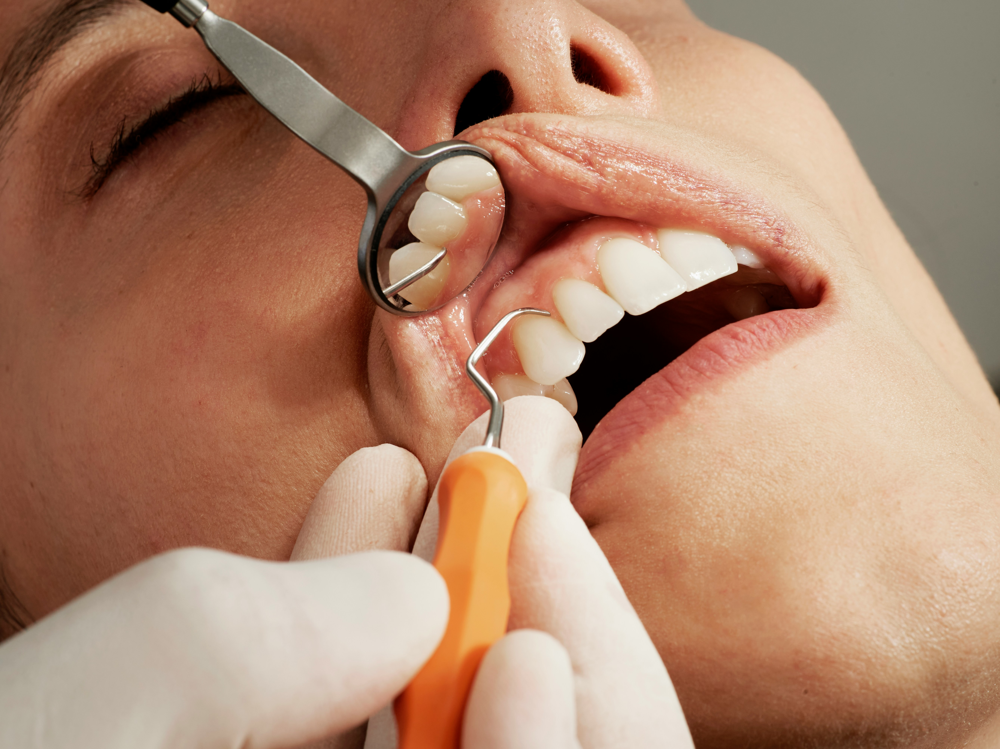

Clínico Geral
Na clínica geral, realizamos atendimentos de rotina com foco na prevenção e no diagnóstico precoce de problemas bucais. Limpezas, avaliações completas, tratamento de cáries e orientação personalizada fazem parte do nosso cuidado com você. Aqui, cada paciente recebe atenção individual para manter a saúde bucal sempre em dia.

Restauração Dentária
Recupere a estética e a função do seu sorriso. As restaurações dentárias devolvem a forma, a resistência e a beleza dos dentes afetados por cáries, fraturas ou desgastes. Utilizamos materiais modernos e duráveis, como resina composta,para garantir resultados naturais e confortáveis. Seu dente tratado com precisão e delicadeza, como se fosse único — porque é.

Toxina Botulínica (Botox)
Beleza e bem-estar com segurança e responsabilidade.A aplicação da toxina botulínica vai muito além da estética facial. Além de suavizar rugas e linhas de expressão, o Botox pode ser usado para tratar questões funcionais, como bruxismo e sorriso gengival. Tudo feito com técnica, cuidado e acompanhamento profissional, garantindo um resultado harmônico e natural.